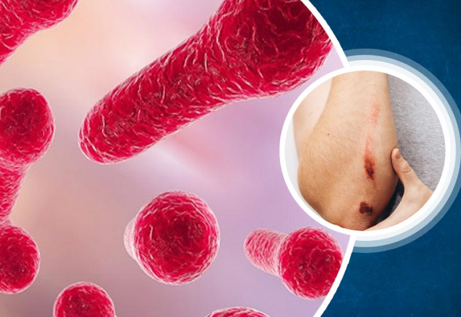
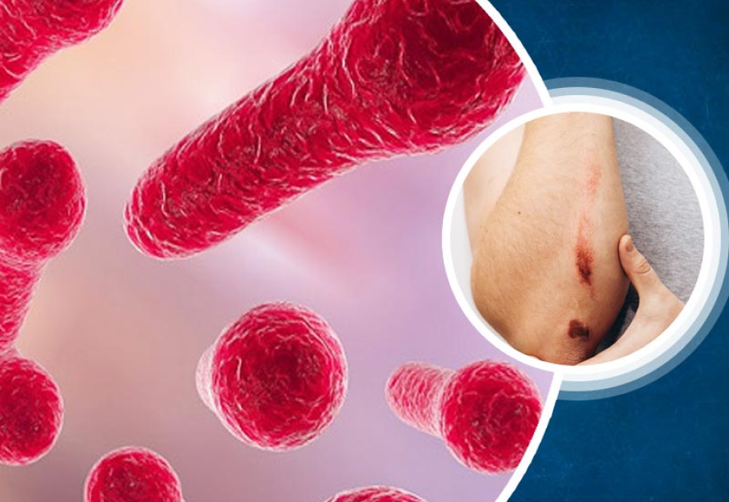

Tetanus
Causes and Symptoms
Causes: The bacteria produce a toxin called tetanospasmin, which affects the nervous system, leading to muscle stiffness and spasms. The toxin travels through the nerves to the spinal cord and brain, where it interferes with the normal functioning of inhibitory neurons, causing overstimulation of muscles. This results in muscle rigidity and painful muscle contractions, most commonly starting in the jaw and neck (hence the name "lockjaw") but can spread to other parts of the body.
symptoms: Symptoms of tetanus typically develop within a few days to several weeks after infection, depending on factors such as the location and severity of the wound. Early symptoms may include muscle stiffness and spasms, difficulty swallowing, stiffness of the jaw muscles (trismus), and muscle pain. As the infection progresses, muscle spasms can become severe and may lead to complications such as fractures, respiratory problems, and even death if untreated The severity of tetanus depends on various factors, including the amount of toxin produced, the site of the wound, and the individual's immune response. Tetanus can be particularly dangerous in unvaccinated individuals, as well as in newborns born to mothers who are not vaccinated against tetanus.